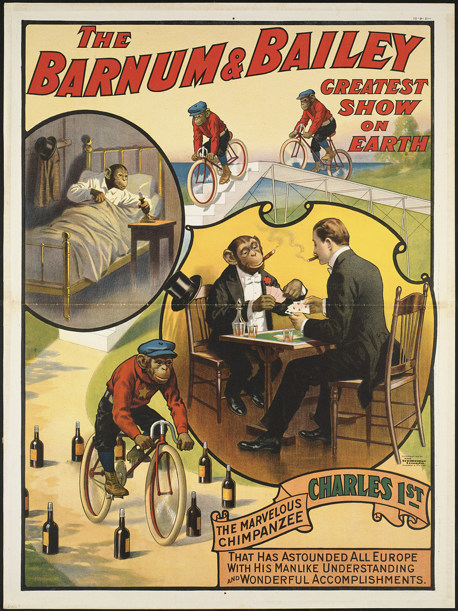
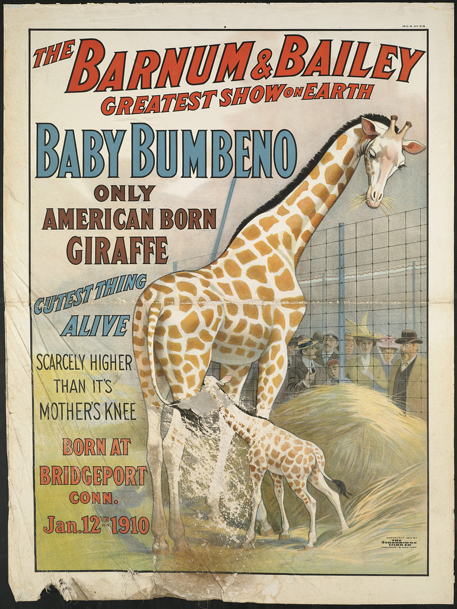

The Barnum & Bailey greatest show on earth : The Apollo trio
The Barnum & Bailey greatest show on earth : The Apollo trio

The Barnum & Bailey greatest show on earth : Charles 1st
 The Barnum & Bailey latest and greatest thriller the balloon horse Jupiter : In his sensational ascension act with a gorgeous pyrotechnic display at every performance of the greatest show on earth
The Barnum & Bailey latest and greatest thriller the balloon horse Jupiter : In his sensational ascension act with a gorgeous pyrotechnic display at every performance of the greatest show on earth

The Barnum & Bailey greatest show on earth : Baby Bumbeno, only American born giraffe, cutest thing alive